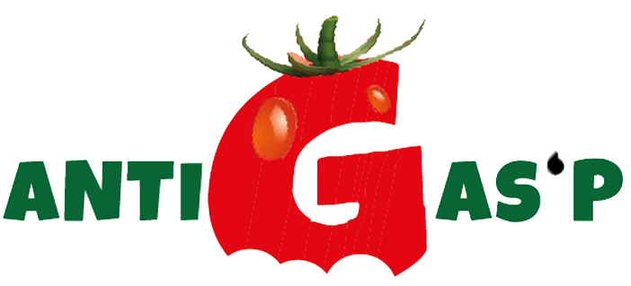
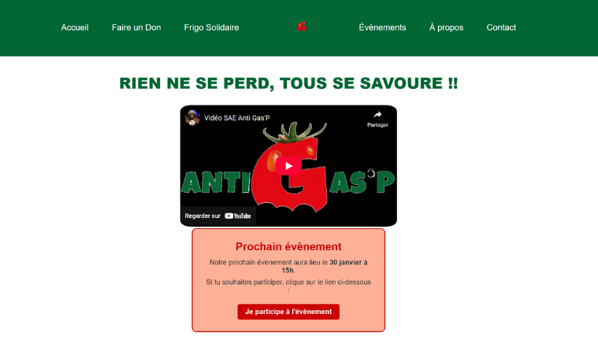

Antigas’P est un projet universitaire réalisé dans le cadre du BUT MMI. L’objectif était de créer une association fictive et de mener un projet complet de A à Z, en mobilisant l’ensemble des compétences acquises durant le premier semestre.
Le thème imposé était le gaspillage alimentaire. J’ai donc imaginé une identité engagée autour de la sensibilisation et de la réduction du gaspillage. Ce projet m’a permis de mettre en pratique mes compétences en Illustrator pour créer un logo, en HTML / CSS pour développer un site web, et en VS Code pour structurer et organiser le projet de manière professionnelle.
J’ai particulièrement apprécié la dimension complète du projet : recherche de références (benchmark), création d’un univers graphique cohérent, conception d’un logo lisible et impactant, puis développement d’un site vitrine permettant de présenter l’association et ses valeurs.

